ChuaTayAn/AnGiang,ChauDoc
タイアン寺（西安寺）/チャウドック
チベット高原が源流のメコン川は中国ミャンマーラオスタイカンボジアと流れ、プノンペン辺りで東を流れる前江と西を流れる後江のふた手に別れる。その後江のほとりの町、チャウドック。カンボジアとの国境とは目と鼻の先だ。
チャウドックの街は国境の街らしく市場には様々な商品が並ぶ。タイのノートとかゲームボーイのパチモノとか緑色のドラえもんとか・・・
遊戯王カードなんか全部中国語でした。
町の西にあるサム山は聖地としてあがめられている。そのサム山には幾つか寺があり多くの人が訪れている。
観光客や地元の参拝客、あと線香売りとかジュース売りとか宝くじ売りとか物乞いとか物乞いとか物乞いとか・・・
 で、そのサム山の入口にあるタイアン寺。入口からしてめっちゃファンキーです。
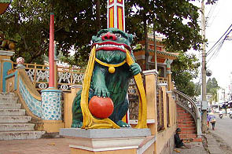 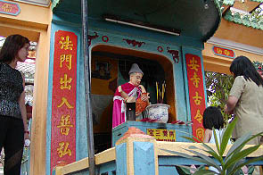
すでに門を潜る前から素敵なオブジェに足止めされる。
布を噛む獅子とか赤ちゃんを抱っこしている坊さんとか。あと線香売りとか物乞いとか物乞いとか。
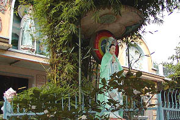
やっと門を潜るとまたしても線香売りに囲まれる。頼むからカメラの真ん前で仁王立ちしないでくれ〜。
という訳でどうしたらこの危機を乗り越えられるか一寸考えた。
ポクポクポクポクポクポクポク・・・チーン！
なーんだ、線香、買えばいいんじゃん。
というわけで花火のような線香を購入。いかにも中国製な安いラベルがキッチュで良い。
一度線香を買ってしまえばもう誰も寄ってこない（物乞いは何故か境内には入ってこなかった）。
物凄く消極的な解決法は大成功である。やっと落ち着いて境内を眺められる。
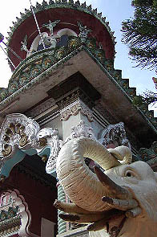 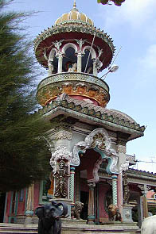
本堂の入口には象さんが守りを固めている。
本堂は色といい形といいインドっぽい雰囲気。
しかしそこはベトナム寺院。何とな〜くインド風、といった程度。
決して築地本願寺のような完全コピーを目指す訳ではなく、屋根が瓦屋根だったりと「どこでもない」感が強い。
塔屋の中には仏陀が安置されている。
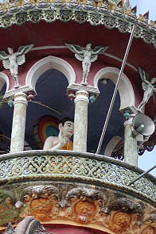 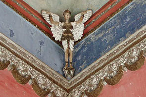
中にはこんな飾りも。コレは天使でしょう。着てるモノとか走れメロスみたいだし。
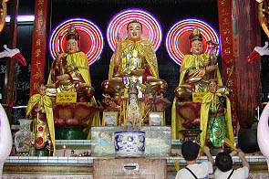
早速購入した線香に着火。電飾光背三体揃い踏み。
で、内部に入ると・・・
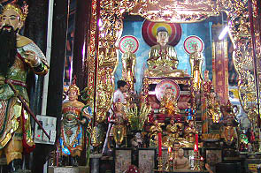 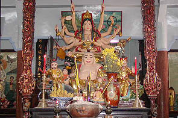
濃い。とにかく濃い。
この辺で薄々気がついてきたのだが、ベトナムの仏像は何故かテカテカしているのだ。
で、そのサム山の入口にあるタイアン寺。入口からしてめっちゃファンキーです。
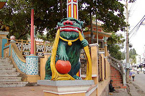 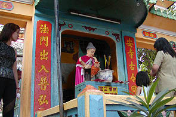
すでに門を潜る前から素敵なオブジェに足止めされる。
布を噛む獅子とか赤ちゃんを抱っこしている坊さんとか。あと線香売りとか物乞いとか物乞いとか。
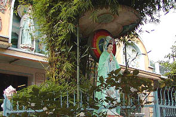
やっと門を潜るとまたしても線香売りに囲まれる。頼むからカメラの真ん前で仁王立ちしないでくれ〜。
という訳でどうしたらこの危機を乗り越えられるか一寸考えた。
ポクポクポクポクポクポクポク・・・チーン！
なーんだ、線香、買えばいいんじゃん。
というわけで花火のような線香を購入。いかにも中国製な安いラベルがキッチュで良い。
一度線香を買ってしまえばもう誰も寄ってこない（物乞いは何故か境内には入ってこなかった）。
物凄く消極的な解決法は大成功である。やっと落ち着いて境内を眺められる。
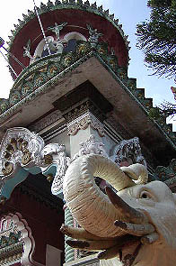 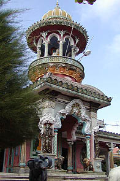
本堂の入口には象さんが守りを固めている。
本堂は色といい形といいインドっぽい雰囲気。
しかしそこはベトナム寺院。何とな〜くインド風、といった程度。
決して築地本願寺のような完全コピーを目指す訳ではなく、屋根が瓦屋根だったりと「どこでもない」感が強い。
塔屋の中には仏陀が安置されている。
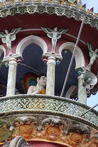 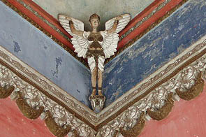
中にはこんな飾りも。コレは天使でしょう。着てるモノとか走れメロスみたいだし。
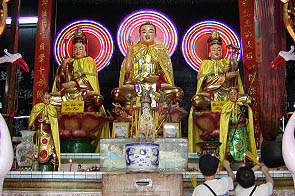
早速購入した線香に着火。電飾光背三体揃い踏み。
で、内部に入ると・・・
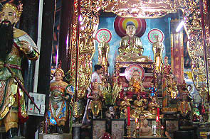 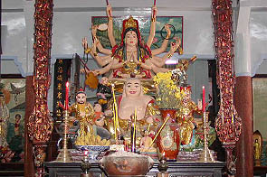
濃い。とにかく濃い。
この辺で薄々気がついてきたのだが、ベトナムの仏像は何故かテカテカしているのだ。
金色の部分が光っているのは勿論だが、肌の部分や衣の部分もきっちり透明ニスでコーティングされているので異様にピカピカしていて有り難みとか荘厳さみたいなものはそのコーティングの下に埋め込まれてしまっている。
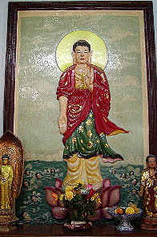額縁に入ったレリーフの仏画さえもテカってます。
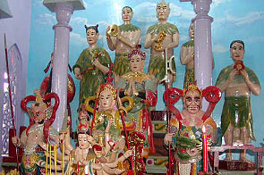 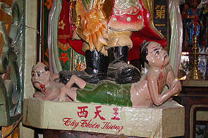
脂性一家とテカテカ邪気。
西天王とは四天王の一人だと思うが、邪気はイイ踏まれっぷりである。血まで流して熱演という他ない。
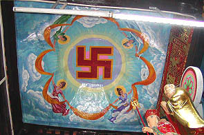
天上には天女さんがひらひら飛んでたりなんかしちゃったりなんかしてえ〜
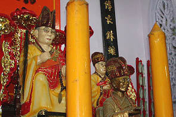
本堂奥には眼鏡を掛けたお坊さん達。この寺の歴代住職なのか有名なお坊さんなのか。
みんながみんな眼鏡を掛けているというのは何か理由があるのだろうか？
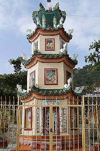 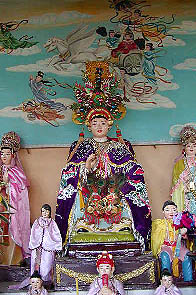
本堂の裏手には歴代住職の墓や仏塔や様々な動物や幾つかのお堂がありさらに遊園地係数が高まってくる。
その中にはミャンマーのナッ神のようなお方が派手な格好で鎮座している。ベトナムの民間信仰神なのだろう。
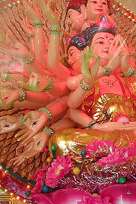
奥のお堂には千眼千手観音がライトアップされていた。全部の手に目が描かれていた。
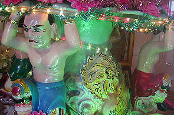
その千手観音を支えている素敵なおじさま方。
緑色のライトがおじさまのツヤツヤの肌に妖しく光り遊園地なんだか寺なんだか良く判らなくなってくる。
外に出ると裏には岩盤が露出したサム山の山頂が見える。その向こうはカンボジアだ。あの自衛隊のPKO部隊が駐留したタケオはわずか十数キロ。
こんなとこで呑気に寺参りなどしていて良いんだろうか・・・
次へいきましょう
越南珍寺劇場
珍寺大道場 HOME